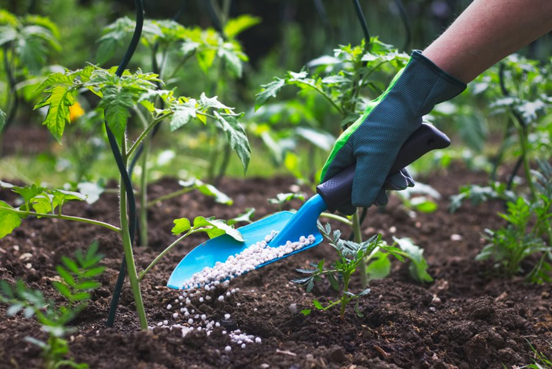

Plant Fertilizing Guidelines

Indoor Plants
- Understand Plant Needs: Learn about the specific nutrient requirements of your indoor plants. Different plants have different fertilizing needs.
- Use Balanced Fertilizer: Choose a well-balanced fertilizer with equal proportions of nitrogen, phosphorus, and potassium (N-P-K) for general use.
- Follow Schedule: Establish a fertilizing schedule, typically during the growing season. Avoid over-fertilizing, as it can harm plants.
- Monitor Soil Conditions: Regularly check the nutrient levels in the soil and adjust your fertilizing routine accordingly.
Outdoor Plants
- Soil Testing: Conduct soil tests in your garden to determine nutrient levels. This helps you choose the right type and amount of fertilizer.
- Seasonal Fertilizing: Adjust fertilizing schedules based on the growing season. Plants may have different nutrient needs during different times of the year.
- Organic Fertilizers: Consider using organic fertilizers to improve soil health and provide a slow release of nutrients over time.
- Apply Fertilizer Properly: Follow recommended application rates and methods to prevent over-fertilizing and minimize environmental impact.